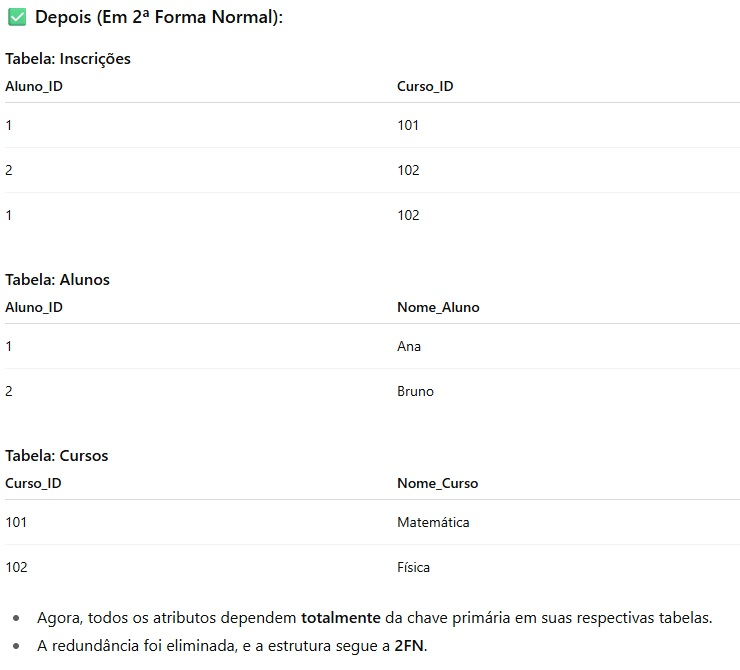

Ensina os fundamentos e práticas de criação, configuração e gerenciamento de bancos de dados voltados
para aplicações web, abordando modelagem de dados, comandos SQL, integração com sistemas web e boas
práticas de armazenamento e recuperação de informações, capacitando o aluno a estruturar e manipular
dados de forma eficiente em projetos web.
Tiago Bezerra
Banco de Dados
Um banco de dados é como um armário organizado onde guardamos informações, cada tipo de
dado precisa de um espaço adequado:
Tipos de dados importantes
INT = números inteiros
VARCHAR(255) = texto com tamanho variável
CHAR = texto com tamanho fixo
TEXT = textos longos
DECIMAL(10,2) = 10 casas, sendo 2 para decimais
DATE, TIME, DATETIME = datas, horários ou ambos
ENUM('admin','editor') = lista de opções pré-definidas
BLOB = usado para guardar arquivos, como imagens ou PDFs
Conceito e Tipos de Bancos
Os dados podem ser organizados de duas formas principais: Relacionais e Não Relacionais.
Relacionais
Organizados em tabelas, linhas e colunas, como em uma planilha do Excel.
Tabela: conjunto de registros
Linha: cada registro
Campo: nome de cada coluna (ex: nome, telefone, e-mail)
Não Relacionais
Organização flexível, como arrays e objetos, podendo ter objetos dentro de objetos ou arrays.
MongoDB
Redis
Modelos de Banco de Dados
No curso, estudamos principalmente o Modelo Relacional, que organiza os dados em
tabelas, linhas e colunas, como em uma planilha.
Outros Modelos Comuns
Não Relacional (NoSQL): mais flexível (Ex: MongoDB)
Hierárquico: dados organizados em árvore, como pastas e subpastas
Em Rede: similar ao hierárquico, mas permite múltiplas conexões entre registros
Modelagem de Dados
A modelagem ajuda a organizar dados de forma estruturada antes de criar o banco, facilitando
implementação e manutenção.
Conceitual (MER - Modelo de Entidade-Relacionamento)
Diagrama abstrato de entidades, atributos e relacionamentos, focado no entendimento do negócio. Pode ser
feito em ferramentas como Figma, FigJam ou até no papel.
Retângulo = representa uma entidade, ou seja, algo real que queremos
armazenar (ex: Cliente, Produto)
Elipse = representa um atributo, característica da entidade (ex: nome,
telefone, preço)
Losango = representa um relacionamento entre entidades (ex: Cliente faz
Pedido)
Sublinhado = indica o identificador/atributo chave da entidade (ex: ID)
Lógico (DER - Diagrama Entidade-Relacionamento)
A modelagem lógica transforma o modelo conceitual em estruturas que podem ser implementadas no banco de
dados. Ela define tabelas, colunas, tipos de dados e relacionamentos. Comparando com o modelo
conceitual:
Retângulo → Tabela : cada entidade vira uma
tabela concreta no banco.
Elipse → Coluna/Atributo : cada atributo da
entidade vira uma coluna da tabela, com tipo de dado definido.
Losango → Relacionamento (linha) : relações entre
entidades se tornam chaves estrangeiras e, se necessário, tabelas associativas.
Sublinhado → Primary Key : o identificador da
entidade se torna a chave primária da tabela.
Físico (Implementação no Banco de Dados)
Implementa o modelo lógico no SGBD real, como MySQL, PostgreSQL, SQLite ou Oracle,
utilizando SQL, índices e constraints.
Tabela = representa uma entidade concreta no banco
CREATE TABLE Cliente (...);
Coluna = representa um atributo da tabela, com tipo de dado definido (ex: VARCHAR,
INT, DATE)
nome VARCHAR(100) NOT NULL;
Primary Key (PK) = identificador único da tabela (ex: id_cliente)
id_cliente INT AUTO_INCREMENT PRIMARY KEY;
Foreign Key (FK) = referência a outra tabela para criar relacionamentos
Índice (INDEX) = acelera buscas e consultas no banco
CREATE INDEX idx_nome ON Cliente(nome);
Constraints = regras de integridade, como NOT NULL, UNIQUE ou CHECK
email VARCHAR(100) UNIQUE NOT NULL;
Cardinalidade
1:1 = um para um
1:N = um para muitos
N:N = muitos para muitos
Entidade associativa
Uma tabela intermediária que conecta duas tabelas em um relacionamento N:N.
SQL
SQL é a linguagem usada para conversar com o banco, cada coluna deve ter um tipo de dado
específico, o que garante consistência e precisão nas informações.
SGBD
Programas que armazenam e organizam dados, como MySQL, SQLite, PostgreSQL, SQL Server e Oracle.
Principais comandos SQL
DDL = criar e alterar estruturas (CREATE, ALTER)
DML = manipular dados (INSERT, UPDATE, DELETE)
DQL = consultar dados (SELECT)
Chaves no Banco de Dados
As chaves organizam e conectam informações entre tabelas.
Chave Primária (PK)
Identificador único da tabela. Exemplo: id
Chave Estrangeira (FK)
Referência para a chave primária de outra tabela.
Relacionamentos Avançados
Quando duas tabelas precisam de ligação mais complexa, usamos chaves primárias compostas.
Exemplo: tabela de vendas que relaciona cliente e produto simultaneamente.
Normalização
É como arrumar uma prateleira de livros: organizamos para não ter duplicação e facilitar
alterações.
Benefícios
Evita registros duplicados
Evita inconsistência de informações
Facilita atualizações e manutenção
Forma Normal
São conjunto de regras usadas para organizar um banco de dados relacional, que são tipo de bancos que
organiza as informações em tabelas(linhas e colunas), podendo se relacionar com outras tabelas através
de chaves primárias e chaves. O objetivo é evitar repetições desnecessárias, deixar os dados corretos e
organizados de um jeito fácil de entender e usar. Existem seis formas normais principais reconhecidas na
teoria, mais a Forma Normal de Boyce-Codd que é uma variação da 3ª. As três primeiras são:
1ª Forma Normal:
Cada campo deve ter apenas um valor, sem listas ou repetições.
2ª Forma Normal:
Todos os campos dependem totalmente da chave primária, evitando duplicação em chaves compostas.

3ª Forma Normal
Não pode haver dependência de campos que não sejam chave, eliminando redundâncias entre atributos.
Boas Práticas de Nomenclatura
Entidade: nome em minúsculo e no plural
Atributo: nome em minúsculo e no singular
Tipo de dado: em maiúsculo
NOT NULL: campo obrigatório
AUTO_INCREMENT: gera identificador automático
DECIMAL(10,2): 10 dígitos no total, 2 para decimais e 8 para inteiros
Terminologias e Conceitos
Consulta/Query: comandos SQL para buscar dados
CRUD: Create, Read, Update, Delete
Backup e Restauração: segurança dos dados
Diagrama: documentação do banco
Armazenamento Seguro de Senhas em PHP
O que é Hash?
Um hash é como uma “impressão digital” da senha, transformação unidirecional impossível de reverter.
Por que usar Hash?
Protege a senha real mesmo em caso de invasão
Dificulta ataques e vazamentos
Armazenando no Banco
Use uma coluna VARCHAR(255) para guardar o hash (como os gerados por password_hash() no PHP).
Outras Boas Práticas de Segurança
Fazer backups regulares
Controlar permissões de acesso por usuário
Resumindo: nunca guarde senhas em texto puro.
Ferramentas e Ambientes
MySQL é um SGBD para trabalhar de forma visual, que facilita a escrita e
execução de SQL.
Já o phpMyAdmin é uma ferramenta web muito usada em servidores e hospedagens.